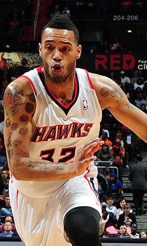

|  |
Матчи |
68 |
|
Передачи (всего/среднее) |
75 |
1.1 |
| В основе |
|
|
Подборы в защите (всего/среднее) |
154 |
2.3 |
| Время (всего/среднее) |
1123:00 |
16:31 |
Подборы в атаке (всего/среднее) |
45 |
0.7 |
| Очки (всего/среднее) |
529 |
7.8 |
Подборы (всего/среднее) |
199 |
2.9 |
| 2-очковые броски (всего/среднее) |
135/261 |
2/3.8 |
Перехваты (всего/среднее) |
25 |
0.4 |
| 2-очковые броски (% реализации) |
51.7% |
|
Потери (всего/среднее) |
39 |
0.6 |
| 3-очковые броски (всего/среднее) |
66/192 |
1/2.8 |
Блокшоты (всего/среднее) |
3 |
0 |
| 3-очковые броски (% реализации) |
34.4% |
|
Блокшоты соперника (всего/среднее) |
16 |
0.2 |
| Штрафные броски (всего/среднее) |
61/77 |
0.9/1.1 |
Фолы (всего/среднее) |
83 |
1.2 |
| Майк Скотт |
Штрафные броски (% реализации) |
79.2% |
|
Коэффициент полезности (всего/среднее) |
425 |
6.3 |